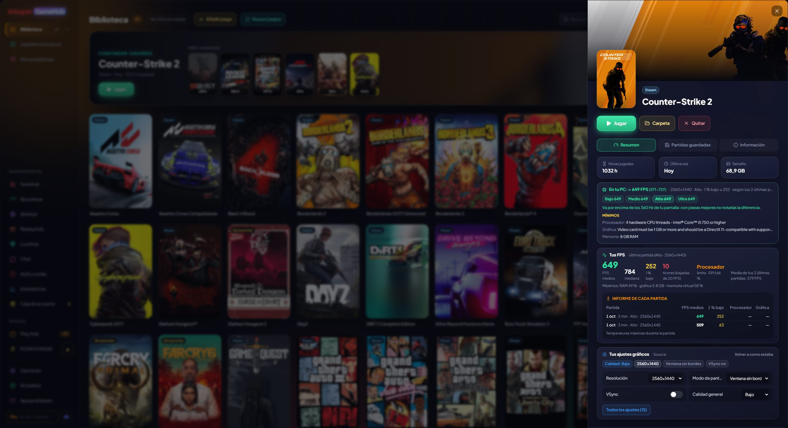

Strona każdej gry
Wszystko o grze w jednym panelu: jak działa na twoim komputerze, twoje FPS, twoje ustawienia i twoje zapisy.
Kliknięcie gry otwiera jej stronę, w czterech kartach: Podsumowanie (twoje godziny, ostatnia gra, zajmowane miejsce, wymagania i twoje FPS), Ustawienia graficzne (z opcjami uruchamiania), Zapisane gry i Informacje (twoje osiągnięcia, opis, sklep, studio, data premiery, gdzie jest zainstalowana i gdzie zapisuje).
Działa na moim komputerze? GameHub zna twój procesor, kartę graficzną i pamięć i porównuje je z minimalnymi i zalecanymi wymaganiami każdej gry w sklepie Steam. Zobaczysz sygnalizator: zielony, jeśli działa z zapasem, żółty, jeśli spełnia minimum, i czerwony, jeśli nie wystarcza. W bibliotece możesz filtrować, by zobaczyć tylko gry, które działają z zapasem, te, które działają, albo te, które nie działają.
A także ile FPS dostaniesz, z zakresem („≈ 75 FPS (65-85)”) i na każdej jakości: Niska, Średnia, Wysoka i Ultra. Jeśli już w nią grałeś, najpierw pojawiają się twoje prawdziwe FPS (tylko z twojego obecnego GPU i CPU); jeśli nie, są wyliczane z sesji społeczności (jeśli udostępniasz swoje lub masz ArlequinPro) albo, w przybliżeniu, z wymagań Steam.
Co cię ogranicza i co warto ulepszyć? GameHub osobno wylicza, co dałaby twoja karta graficzna, a co potrafi twój procesor, i mówi ci to wprost: „Ogranicza cię GPU: lepszy procesor ledwo podniósłby twoje FPS”, albo odwrotnie, albo że są dobrze dopasowane i trzeba by ulepszyć oba.
Ma też pogrupowane zapisane gry (zapisy, ustawienia…), jej kopie zapasowe oraz przyciski otwierające jej folder lub instalujące ją.
Szacunek FPS jest wiarygodny: sesje z generowaniem klatek nie są liczone, a GameHub mówi, jakie ustawienia zakłada (skalowanie i ray tracing).
Jak z tego korzystać
- Kliknij dowolną grę w bibliotece i przełączaj karty u góry.
- Filtr „Na moim komputerze” na pasku u góry biblioteki.

Chcesz spróbować?
⬇ Pobierz bezpośrednio 🛍️ Pobierz ze sklepu Microsoft StoreWindows 10 i 11 (64-bit) · Za darmo · Aktualizuje się sam